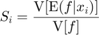
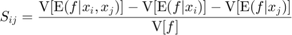
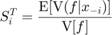
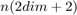
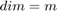
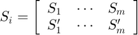
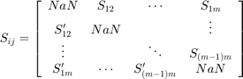
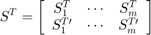
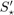

CODES / sensitivity / sobol
Compute (Sobol) global sensitivity indices
Contents
Syntax
- res=CODES.sensitivity.sobol(f,dim,n) computes first order, second order and total global sensitivity indices S, Sij and St respectively of a function f. The problem dimensions dim and sample size n must be provided.
- [...]=CODES.sensitivity.sobol(...,param,value) uses a list of parameters param and values values (c.f., parameter table).
Description
Compute two sets of (Sobol) global sensitivity indices defined as:
- First order

- Second order

- Total

and computed as described in Saltelli (2002). This procedure calls the function  times.
The function returns S, Sij and St such that (for ):



where the  notation refers to the second set of estimates.
If neither bounds ('lb' and 'ub') or marginal inverse distribution functions ('IDF') are specified, variables are assumed to be uniform between 0 and 1.
Parameters
| param | value | Description |
|---|---|---|
| 'lb' | positive integer array, {0} | Lower bounds for uniform variables |
| 'ub' | positive integer array, {1} | Upper bounds for uniform variables |
| 'IDF' | function_handle | Marginal inverse distribution functions in case of non uniform random variables |
| 'sampler' | {'rand'}, 'halton', 'sobol', 'lhs', 'cvt' | Sets the sampler to get the two DOE used in the approach. |
| 'vectorized' | logical, {false} | Whether the function is vectorized |
| 'f_parallel' | logical, {false} | If not vectorized, whether the function should be evaluated in parallel |
| 'conv_seq' | positive integer array, { [ ] } | If provided, trigger a convergence plot. For every value of 'conv_seq', the indices are recomputed. For example, if |n=1000| and 'conv_seq'|=[10,100,1000]|, all indices will be computed using 10, 100 and 1000 samples. |
| 'conv_leg' | logical, {true} | Whether convergence plot should have a legend or not |
| 'bar_plot' | logical, {false} | Whether a bar plot of the indices should be provided |
| 'bar_leg' | logical, {true} | Whether bar plot should have a legend or not |
| 'CI_boot' | logical, {false} | Whether to return bootstraped confidence interval |
| 'nb_boot' | numeric, {200} | Number of bootstraps |
| 'alpha' | positive integer, {0.05} | Significance level for confidence interval. |
| 'boot_type' | {'bca'}, 'norm', 'per', 'cper' | Type of bootstrap confidence interval (Efron, 1987). |
| 'err_plot' | logical, {false} | Whether an error plot of the indices should be provided. |
In addition, options from MultiStart can be used as well, when 'MultiStart' is set to 'MATLAB'.
Example
Compute and plot an anti-locking sample
f=@(x)1/8*prod(3*x.^2+1,2); dim=3; n=1e3; res=CODES.sensitivity.sobol(f,dim,n); disp(res)
S1: [2x3x1 double]
S2: [2x3x1 double]
St: [2x3x1 double]
bar_plot(): bar plot of the Sobol' indices
conv_plot(seq): compute convergence plot for each
sample size in seq (max(seq) must be lower than n)
compute_CI_boot(...): compute confidence interval. Accepts two options:
'alpha' (default 0.05) and 'type' (default 'bca').
Mini Tutorial
 |
A mini tutorial of the capabilities of the sobol function. |
References
- Efron (1987): Efron, B. (1987). Better bootstrap confidence intervals. Journal of the American Statistical Association, 82(397), 171-185. DOI
- Saltelli (2002): Saltelli A., (2011) Making best use of model evaluations to compute sensitivity indices. Computer Physics Communications 145(2):280-297 - DOI
Copyright © 2015 Computational Optimal Design of Engineering Systems (CODES) Laboratory. University of Arizona.
|
|
Computational Optimal Design of Engineering Systems |

|